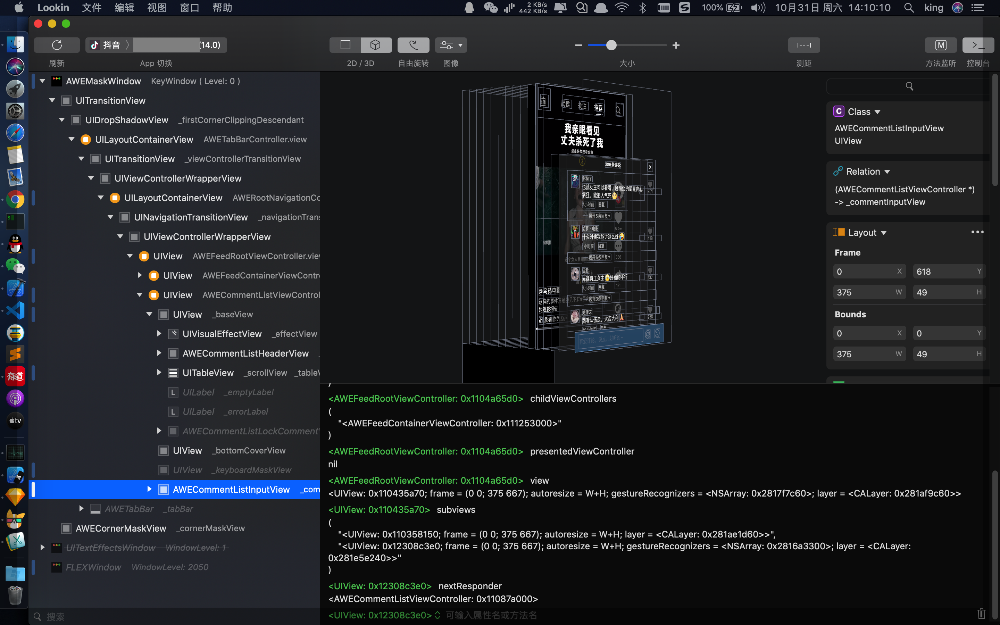

通过Lookin查看视图层级可得知:#
- 首页是一个导航栏控制器, 其
rootViewController为AWEFeedRootViewController AWEFeedContainerViewController为视频列表的控制器, 同时AWEFeedContainerViewController做为AWEFeedRootViewController的childViewControllerAWECommentListViewController为评论弹层,AWECommentListViewController并未采用addChildViewController方式加入AWEFeedContainerViewController作为其childViewController, 而是直接将AWECommentListViewController.view添加到AWEFeedRootViewController.view
AWECommentListViewController 的视图层级如下:#
baseVieweffectView为UIVisualEffectView实现模糊效果headerViewtableView
keyboardMaskView当键盘弹出时,才显示,用于实现点击上半部分关闭键盘commentInputView底部输入框
抖音评论列表有以下效果:#
- 无评论数据时,整个
baseView区域可以通过手势往下滑动以关闭列表 - 有评论数据时,下滑
tableView到顶时继续往下滑动,则会让baseView和commentInputView同步联动往下滑 - 同时还有两个细节个人认为没有处理好:
- 当往下联动后再往上滑动无法触发
tableView继续往上滑动 - 当
tableView已经往上滑动了一部分后,从headerView区域无法触发滑动,只能先通过tableView触发,然后激活联动处理
- 当往下联动后再往上滑动无法触发
接下来通过逆向分析得知:#
- 通过上面分析的视图层级,找到
baseView, 发现baseView自身被添加了一个UIPanGestureRecognizer UIPanGestureRecognizer的target为AWECommentListViewControllerUIPanGestureRecognizer的action为AWECommentListViewController的selfPanned:UIPanGestureRecognizer的delegate为AWECommentListViewController- 大致确定了整个联动处理是依靠
baseView的手势和tableView自身的手势共同完成
iPhone:~ root# cycript -p Aweme
cy# UIApp.keyWindow.rootViewController
#"<AWETabBarController: 0x116283600>"
cy# [#0x116a59520 subviews]
@[#"<UIView: 0x115e3f7d0; frame = (0 0; 375 667); autoresize = W+H; layer = <CALayer: 0x282b1a7a0>>",#"<UIView: 0x119063140; frame = (0 0; 375 667); autoresize = W+H; gestureRecognizers = <NSArray: 0x2827722e0>; layer = <CALayer: 0x282af3ac0>>"]
cy# [#0x119063140 subviews]
@[#"<UIView: 0x11f16f720; frame = (0 180; 375 487); gestureRecognizers = <NSArray: 0x282773c60>; layer = <CALayer: 0x282a8fd00>>",#"<UIView: 0x11f1d60d0; frame = (0 667; 375 200); layer = <CALayer: 0x282aa3b20>>",#"<UIView: 0x11f1f3370; frame = (0 0; 375 667); alpha = 0; gestureRecognizers = <NSArray: 0x282755860>; layer = <CALayer: 0x282c6d720>>",#"<AWECommentListInputView: 0x11f1f0110; frame = (0 618; 375 49); gestureRecognizers = <NSArray: 0x282765380>; layer = <CALayer: 0x282bc2080>>"]
....
....
cy# [#0x11f16f720 gestureRecognizers]
@[#"<UIPanGestureRecognizer: 0x12175a1c0; state = Possible; view = <UIView 0x11f16f720>; targets= <(\n \"(action=selfPanned:, target=<AWECommentListViewController 0x1163bd400>)\",\n \"(action=awe_UITracker_gestureRecognizer:, target=<UIView 0x11f16f720>)\"\n)>>"]
cy# [#0x12175a1c0 delegate]
#"<AWECommentListViewController: 0x1163bd400>"
....
....写代码实现#
- 没有具体去分析抖音的实现,所以接下来会通过自己的方法来实现抖音的效果,同时处理上面所提出的两个细节
- 创建一个继承自
UITableView的CommentListTableView,并重写gestureRecognizerShouldBegin:
//
// CommentListTableView.m
// TestTableView
//
// Created by 0x1306a94 on 2020/10/31.
// Copyright © 2020 0x1306a94. All rights reserved.
//
#import "CommentListTableView.h"
@implementation CommentListTableView
- (BOOL)gestureRecognizerShouldBegin:(UIGestureRecognizer *)gestureRecognizer {
if ([gestureRecognizer isKindOfClass:UIPanGestureRecognizer.class]) {
UIPanGestureRecognizer *pan = (UIPanGestureRecognizer *)gestureRecognizer;
CGPoint contentOffset = self.contentOffset;
CGPoint velocity = [pan velocityInView:pan.view];
// CGAffineTransform transform = self.superview.transform;
// if (transform.ty != 0) {
// return NO;
// }
if (contentOffset.y == -self.contentInset.top) {
NSLog(@"%@", NSStringFromCGPoint(velocity));
// 关键点: 当前是最顶点, 不允许往下滑动
if (velocity.y > 0) {
// 向下
return NO;
}
}
}
return YES;
}
@end- 创建
CommentListViewController, 并构建对应的视图层级
//
// CommentListViewController.m
// TestTableView
//
// Created by 0x1306a94 on 2020/10/31.
// Copyright © 2020 0x1306a94. All rights reserved.
//
#import "CommentListViewController.h"
#import "CommentListTableView.h"
@interface CommentListViewController () <UITableViewDataSource, UITableViewDelegate, UIGestureRecognizerDelegate>
@property (nonatomic, strong) UIView *containerView;
@property (nonatomic, strong) UIView *headerView;
@property (nonatomic, strong) CommentListTableView *tableView;
@property (nonatomic, assign) BOOL panGestureEnable;
@end
@implementation CommentListViewController
- (void)viewDidLoad {
[super viewDidLoad];
// Do any additional setup after loading the view.
self.view.backgroundColor = UIColor.clearColor;
self.containerView = [[UIView alloc] initWithFrame:CGRectMake(0, CGRectGetHeight(UIScreen.mainScreen.bounds) * 0.3, CGRectGetWidth(UIScreen.mainScreen.bounds), CGRectGetHeight(UIScreen.mainScreen.bounds) * 0.7)];
self.containerView.backgroundColor = UIColor.orangeColor;
self.containerView.layer.cornerRadius = 10;
self.containerView.layer.maskedCorners = kCALayerMinXMinYCorner | kCALayerMaxXMinYCorner;
self.containerView.layer.masksToBounds = YES;
self.headerView = [[UIView alloc] initWithFrame:CGRectMake(0, 0, CGRectGetWidth(self.containerView.bounds), 100)];
self.headerView.backgroundColor = UIColor.redColor;
self.tableView = [[CommentListTableView alloc] initWithFrame:CGRectMake(0, 100, CGRectGetWidth(self.containerView.bounds), CGRectGetHeight(self.containerView.bounds) - 100) style:UITableViewStylePlain];
self.tableView.backgroundColor = UIColor.whiteColor;
self.tableView.dataSource = self;
self.tableView.delegate = self;
[self.tableView registerClass:UITableViewCell.class forCellReuseIdentifier:@"cell"];
[self.view addSubview:self.containerView];
[self.containerView addSubview:self.headerView];
[self.containerView addSubview:self.tableView];
UIPanGestureRecognizer *pan = [[UIPanGestureRecognizer alloc] initWithTarget:self action:@selector(panGestureHandler:)];
pan.delegate = self;
self.panGestureEnable = NO;
[self.containerView addGestureRecognizer:pan];
self.view.hidden = YES;
CGAffineTransform transform = CGAffineTransformMakeTranslation(0, CGRectGetHeight(self.containerView.frame));
self.containerView.transform = transform;
}
- (void)panGestureHandler:(UIPanGestureRecognizer *)pan {
if (self.tableView.isDragging) {
return;
}
switch (pan.state) {
case UIGestureRecognizerStateBegan: {
[pan setTranslation:CGPointZero inView:pan.view];
break;
}
case UIGestureRecognizerStateChanged: {
CGPoint translation = [pan translationInView:pan.view];
CGPoint contentOffset = self.tableView.contentOffset;
if (contentOffset.y > 0) {
// 这段代码用于处理, tableView 已经往上滑动一部分后
// 从 headerView 区域 触发手势, 无法滑动 tableView
// 还有另一个功能就是,用于修正 tableView
contentOffset.y -= translation.y;
[pan setTranslation:CGPointZero inView:pan.view];
[self.tableView setContentOffset:contentOffset animated:NO];
return;
}
// 如果去掉这段代码,会出现 突然往下跳动, 具体现象可以,注释掉这部分代码
if (contentOffset.y == 0.0 && !self.panGestureEnable) {
self.panGestureEnable = YES;
[pan setTranslation:CGPointZero inView:pan.view];
return;
}
[self updatePresentedViewForTranslation:translation.y];
break;
}
case UIGestureRecognizerStateEnded:
case UIGestureRecognizerStateFailed: {
self.panGestureEnable = NO;
CGAffineTransform curTransform = self.containerView.transform;
CGAffineTransform transform = CGAffineTransformIdentity;
// 200 这个临界值可以修改为自己项目合适的值
if (curTransform.ty >= 200) {
[self hide];
} else {
/* clang-format off */
[UIView animateWithDuration:0.6 delay:0 usingSpringWithDamping:1 initialSpringVelocity:1 options:UIViewAnimationOptionCurveEaseOut| UIViewAnimationOptionAllowUserInteraction animations:^{
self.containerView.transform = transform;
} completion:^(BOOL finished) {
}];
/* clang-format on */
}
break;
}
default:
break;
}
}
#pragma mark - updatePresentedViewForTranslation
- (void)updatePresentedViewForTranslation:(CGFloat)translation {
if (translation < 0) {
self.containerView.transform = CGAffineTransformIdentity;
[self.tableView setContentOffset:CGPointMake(0, -translation) animated:NO];
return;
}
self.containerView.transform = CGAffineTransformMakeTranslation(0, translation);
}
#pragma mark - UIGestureRecognizerDelegate
- (BOOL)gestureRecognizer:(UIGestureRecognizer *)gestureRecognizer shouldRecognizeSimultaneouslyWithGestureRecognizer:(UIGestureRecognizer *)otherGestureRecognizer {
// 关键点: 允许同时识别多个手势
return YES;
}
#pragma mark - UITableViewDataSource
- (NSInteger)tableView:(UITableView *)tableView numberOfRowsInSection:(NSInteger)section {
return 100;
}
- (UITableViewCell *)tableView:(UITableView *)tableView cellForRowAtIndexPath:(NSIndexPath *)indexPath {
UITableViewCell *cell = [tableView dequeueReusableCellWithIdentifier:@"cell"];
cell.textLabel.text = @(indexPath.row).stringValue;
return cell;
}
#pragma mark - UIScrollViewDelegate
- (void)scrollViewDidScroll:(UIScrollView *)scrollView {
// 关键点: 当 tableView 下滑到顶以后, 交由 containerView 的手势处理
// 这样就不需要下滑到顶以后,需要松开手指 再次触发手势
if (scrollView.contentOffset.y <= -scrollView.contentInset.top && scrollView.panGestureRecognizer.state == UIGestureRecognizerStateChanged) {
NSLog(@"tableview top");
scrollView.panGestureRecognizer.state = UIGestureRecognizerStateEnded;
[scrollView setContentOffset:CGPointZero animated:NO];
return;
}
}
#pragma mark - public method
- (void)show {
self.view.hidden = NO;
CGAffineTransform transform = CGAffineTransformIdentity;
/* clang-format off */
[UIView animateWithDuration:0.6 delay:0 usingSpringWithDamping:1 initialSpringVelocity:1 options:UIViewAnimationOptionCurveEaseOut| UIViewAnimationOptionAllowUserInteraction animations:^{
self.containerView.transform = transform;
} completion:^(BOOL finished) {
}];
/* clang-format on */
}
- (void)hide {
CGAffineTransform transform = CGAffineTransformMakeTranslation(0, CGRectGetHeight(self.containerView.frame));
/* clang-format off */
[UIView animateWithDuration:0.6 delay:0 usingSpringWithDamping:1 initialSpringVelocity:1 options:UIViewAnimationOptionCurveEaseOut| UIViewAnimationOptionAllowUserInteraction animations:^{
self.containerView.transform = transform;
} completion:^(BOOL finished) {
if (finished) {
self.view.hidden = YES;
}
}];
/* clang-format on */
}
@end- 无数据时,可以将
tableView.scrollEnabled = NO - demo 效果如下